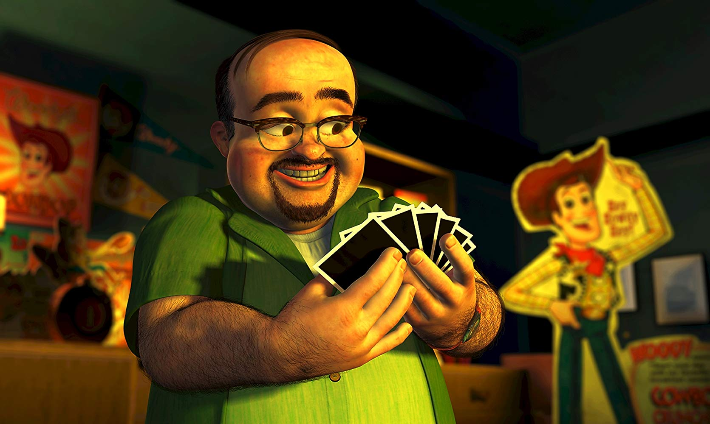
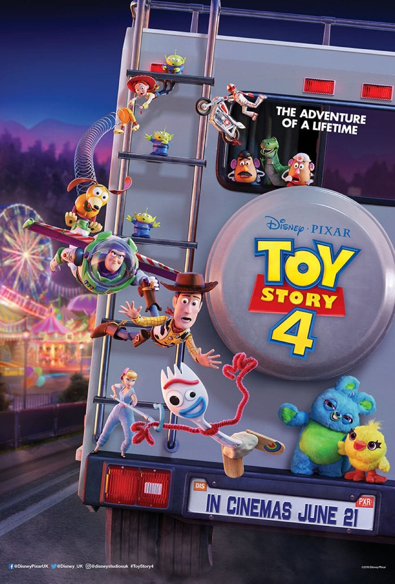

Set in a world where toys come alive, the movie focuses on the toys of a little boy named Andy Davis and centers on his favorite toy, a pull-string cowboy doll named Woody, worrying about being replaced by Andy's newest toy, a space ranger named Buzz Lightyear. When Woody and Buzz are suddenly trapped in the house of Andy's toy-killing neighbor Sid Phillips and his vicious dog Scud, they must work together to escape if they ever want to return to Andy’s house.
Al's Penthouse

In Toy Story 2, Woody is stolen by a greedy toy collector named Al McWhiggin who wants to sell him to a museum in Japan. Meanwhile, Woody is taken to Al's apartment, where he is greeted by a yodeling cowgirl named Jessie, a horse named Bullseye, and the Prospector, an unsold toy still in its original box. They reveal to Woody that he is a vintage Sheriff Woody collectible doll and the star of a forgotten children's TV show, Woody's Roundup. Afterwards, Buzz, Rex, Hamm, Mr. Potato Head and Slinky Dog embark on a journey across the Tri-County Area to rescue him.
Bonnie's House
In Toy Story 3, Andy is getting ready to depart for college. Woody, Buzz, and their friends knew Andy would grow up eventually but they're all worried about what will happen to them now that he has. Sure enough, Andy plans to store his toys in the attic, however when his mom accidentally donates them to a daycare, Andy's toys must get home to him before he leaves.
Second Chance Antiques

Woody has always been confident about his place in the world and that his priority is taking care of his kid, whether that is Andy or Bonnie. But when Bonnie adds a reluctant new toy called “Forky” to her room, a road trip adventure alongside old and new friends will show Woody how big the world can be for a toy. Along the way, Woody is reunited with Bo Peep. Knowing he likely will not ever be Bonnie's favorite, and with Buzz supporting him, Woody decides not to return to Bonnie and to instead depart with Bo on her mission to help lost toys get adopted by children.